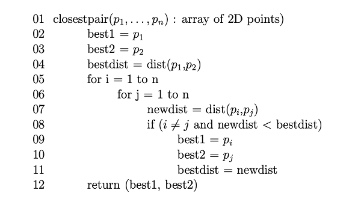
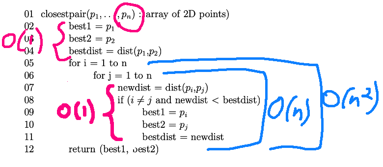
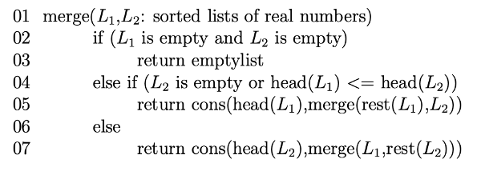
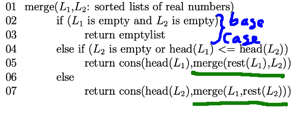
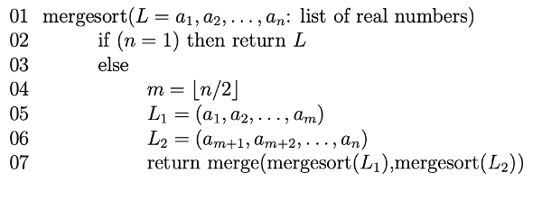
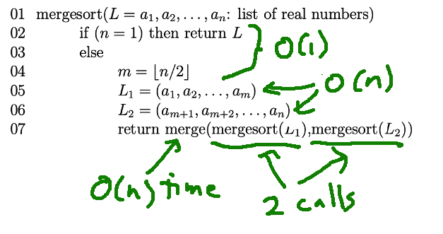
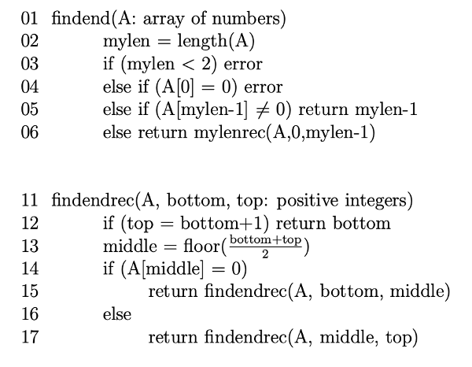
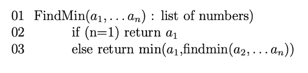
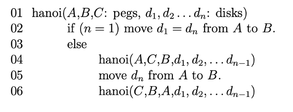

Suppose that we have a piece of software, e.g. one component in a code design, and we want to analyze its running time. There are three main patterns of analysis:
We'll do nested loops very quickly, because they are easy. While loops are mostly beyond the scope of this course. There is an example in the book. We'll mostly concentrate on analyzing recursive functions.
Here's a simple example of a function with nested for loops.

Notice that the input is an array, whose length is n. So we're looking for parts of the code whose running time depends on n. Most lines (2-4, 7-11) take the same amount of time regardless of the length of the input. The loop that starts at line 6 runs lines 7-11 n times. The loop that starts at line 5 runs that whole package n times. So lines 7-11 execute \(n^2\) times. So the function runs in \(O(n^2)\) time.

Technically lines 9-11 might execute less often, depending on what's in the array. But we're trying to describe the worst-case behavior.
Also, the for loop at line 6 has to test its moving variable (j) against its upper bound n. That test executes n+1 times, with the last time being the test that stops the loop. But we don't care about the difference between n times and n+1 times, because both are O(n).
Now, let's look at some recursive code. This is for an algorithm called "mergesort". This algorithm divides the input array recursively into smaller and smaller pieces, until each one contains only a single element. As it returns from the recursion, it builds the sorted list by merging smaller sorted lists to make longer ones. Here's a couple demos of mergesort (and other sorting algorithms) in action:
You've probably used the library function quicksort. Mergesort has a faster big-O running time than quicksort and is easier to explain. However, quicksort can be implemented with much better constants. So quicksort is the method of choice for data that will fit in memory. Mergesort is used for sorting very large datasets, especially if they must be read in sequentially (e.g. from a distant server).
Mergesort depends on a utility called merge:

The inputs to merge are two linked lists that we know to be sorted. It produces a merged list by repeatedly doing the following:
compare the first elements in the two lists, i.e. head(\(L_1\)) and head(\(L_2\))
remove the smaller of these two elements from its list.
put it onto the output list
We'll handle the "repeatedly" part using recursion. I've underlined the two recursive calls below. Let's look at line 5. It gets called when the first element of \(L_1\) is smaller than the first element of \(L_2\). The function call rest(\(L_1\)) returns the list \(L_1\) minus its first element. So the recursive call merges rest(\(L_1\)) with \(L_2\). We take its result and add head(\(L_1\)) onto the front of the merged list using the function cons.

To analyze the running time of merge, first notice that we have two input lists. We'll define our input size n to be the sum of their lengths. There are two recursive calls in the code but only one of them is called each time we go through the function. All the other steps in the function take constant time. So we can set up a recursive running time formula like this:
T(0) = c
T(n) = T(n-1) + d
The constant c represents all the work done at the base case. We don't know exactly how much time that will take, but we know it doesn't depend on the length of the input. d is all the work in the rest of the function except for the recursive calls.
The term T(n-1) has two features to notice. n-1 is the length of the pair of lists that we're passing to the recursive call. I.e. we've made the input size one element shorter. And then there's an invisible coefficient of 1 in from of T(n-1), because each pass through merge makes only one recursive call.
If you find the closed form for this recursive definition (e.g. using unrolling), its leading term is proportional to n. So our merge function takes O(n) time.
Now, let's look at the main function for mergesort:

The input is a single list, of length n. This time there are again two recursive calls, underlined below. But, in this function, we execute both recursive calls each time we go through the function.

The variable m is the position halfway through the linked list. So the input to each recursive call is half the size of our original input. Since both recursive calls are executed, we have a coefficient of 2 before the recursive call in our running time function.
T(1) = c
T(n) = 2T(n/2) + dn
Now, look at the parts of our mergesort code that lie outside the two recursive calls. Some parts take constant time. Hoever, splitting the linked list in half requires time proportional to the length of the list, because we have to walk link-by-link from the front of the list to the middle. Also, as we saw above, merging two sorted lists takes O(n) time. So, in our recursive running time function, the extra work term is dn rather than d.
You can use a recursion tree to find a closed form for this recursive function. It's \(O(n \log n)\).
Let's look at some other algorithms with variations on this structure. Here is a function (findend) that finds the last non-zero value in an array. We're assuming that the array contains a sequence of non-zero values, followed by some number of zeroes. The function findend just sets up the input to the recursive function findendrec.

This code is doing binary search. That is, it splits the array in half, examines the middle value, and proceeds to search one of the two halves recursively. There are two recursive calls, but we only execute one of them each time through findendrec. Each recursive call gets a half-size section of the list to search. And everything else in both functions takes constant time. So our recursive running time function looks like this
T(1) = c
T(n) = T(n/2) + d
If you draw the recursion tree for this, you'll see that the closed form is \(O(\log n\)). The recursion tree has height \(O(\log n\)) and it doesn't branch.
Here'a a function that finds the smallest element in a list of numbers.

Findmin is generally similar to findend. But notice that the input to the recursive call is only one element shorter than the original input. So the running time function is:
T(1) = c
T(n) = T(n-1) + d
The recursion tree still doesn't branch, but now its height is O(n). So the function's running time is O(n).
If the problem size decreases only slowly but the recursion tree branches, it's all over for efficiency. For example, consider the Towers of Hanoi puzzle:

The goal is to move the tower of rings onto another peg. You may only move one ring at a time. And a ring may not be put on top of a smaller ring. Watch this demo of the recursive solution.
Here's pseudo code for the solution:

Line 4 moves everything except the largest ring onto a temporary storage peg (C), using the magic of recursion. Line 5 moves the largest ring to peg B. Then line 6 moves the rest of the pile onto B.
We have two recursive calls. The problem size for each recursive call is one disk smaller than the original problem. So our recursive running time definition looks like this:
T(1) = c
T(n) = 2T(n-1) + d
If you solve this using either unrolling or a recursion tree, you'll discover that it is \(O(2^n)\).